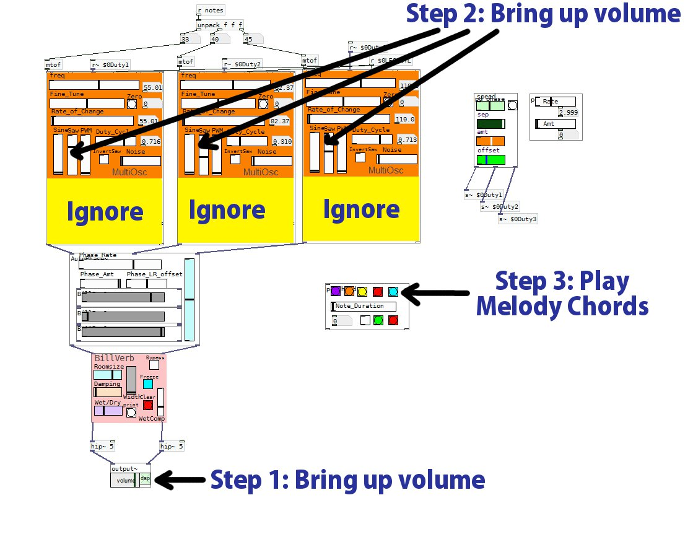

Hi!
Thanks for volunteering for being a beta-tester for my PD tools library.
- First, unpack the zip file archive in a convenient location.
- Next, be sure to add the "abstractions" folder to you PD search
path.
Edit -> Preferences -> New
- Next, open the file patches/3OscDEMO0-StartHereFirst.pd
REFER to the diagram below.
- Bring up the volume on the
[output~]. This will turn on the DAC.
- Bring op the volume on some
waveforms on the orange 3x [multi-osc].
I suggest you begin with Sawtooth (middle). or PWM (right).
- Click through the colored
melody
chords (top row only)
- Do you hear a sound?
Please email me if you have problems getting this far.
If you do get this far, feel free to play with whatever knowbs you see.
WilliamAHuston@gmail.com
